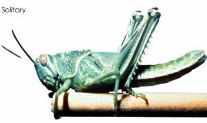
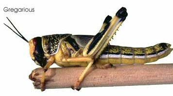

Monday, November the 8th, 2004
back to: title, date or indexes
Once upon a time there were two locusts. One was solitary. It liked to mope by itself and shunned the company of other locusts, even its own extended family. It was bitter, because of some perceived slight in the past

The second locust, by contrast, was gregarious. It was the life and soul of the party. You can bet that if a swarm was gathering, this locust would be in the thick of it.

Do you remember that old Rolf Harris hit, Two Little Boys? Well, what took place with these two locusts was very similar to the story told in that song. What seems so unfair is that, because they were locusts, no one ever thought to grant them such musical immortality. It's a shame.